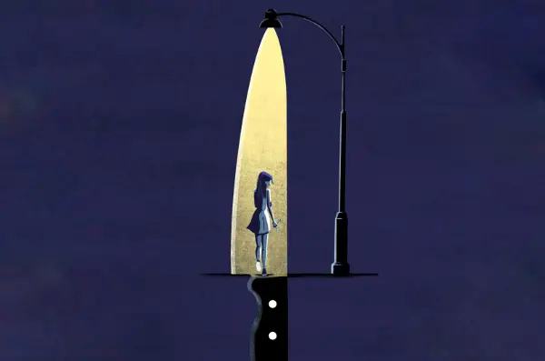
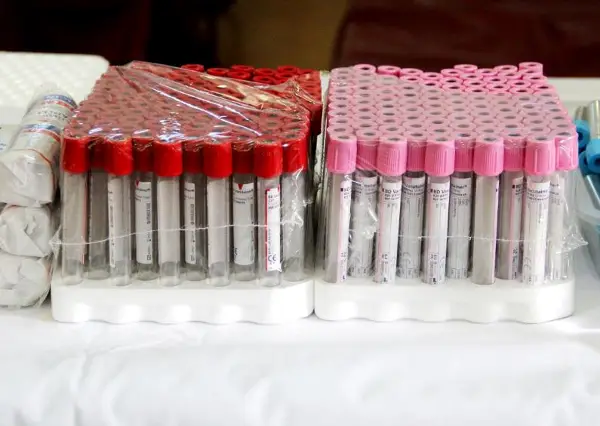
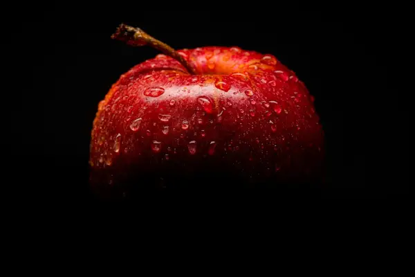

Магазин

Уште колку животи треба да се изгубат додека Собранието расправа дали заштитата од родово базирано насилство е „премногу прогресивна“?
Во меѓувреме, во август беа предложени измени во Собранието само на еден закон - Законот за спречување и заштита од насилство врз жените и семејно насилство.

Хакери во Франција се обиделе да ги уништат залихите на крв
Француската установа за крв (EFS) соопшти дека во понеделникот, на три локации за складирање плазма, поставките за температура и одмрзнување биле зголемени на екстремно високи н...
Ново истражување – Насмевката на родителот не е само знак на нежност: Научниците откриле како таа влијае на емоционалниот развој на бебињата
Бебињата обично им се насмевнуваат на своите мајки Во посебна студија, објавена во истото списание, Месингер и колегите од Универзитетот во Амстердам набљудувале 58 бебиња на во...
„Кетсај“ го одложија концертот во Детроит половина час пред почетокот: Меган се разболела
Групата „Кетсај“ го одложи концертот во Детроит само 30 минути пред закажаниот почеток, откако членката Меган Скиендиел се разболела.
Самрак на вековниот симбол на шведската индустрија
Волво Карс“ се соочува со финансиски притисоци, пад на продажбата и проблеми со производството на новиот електричен модел EX60, според пренесениот извештај.
Шпанија воведува платено отсуство поради здравствени проблеми поврзани со менопаузата
Сепак, жените кои не се во состојба да ги извршуваат своите работни задачи поради тешки симптоми на менопаузата, можат да остварат право на стандардно боледување.
4 навики пред спиење кои ви го уништуваат срцето: Ако ги повторувате секоја вечер, ризикувате срцев удар
Неправилното време за легнување, спиењето помалку од осум часа, изложеноста на екрани и јадењето оброци по 21:00 часот може да го зголемат ризикот од срцев и мозочен удар.
Вклучен микрофон го фати Брет Баер среде изборниот триумф на демократите: Водителот објасни што сакал да каже
Коментар на Брет Баер , водител на „Фокс њуз“, ненамерно се слушна преку вклучен микрофон за време на известувањето на телевизијата за конгресните избори во САД во 2026 година.
Охриѓанец ги собра парите на покер турнирот во Малта – дома ќе однесе цело богатство
Косаркоски триумфираше во силна меѓународна конкуренција, на турнир со награден фонд од над еден милион евра.

Јаболката се полни со пестициди, како да ги исчистите?
Она што повеќето потрошувачи не го знаат е дека јаболката што ги купуваме во продавниците често се покриени со тенок слој восок.